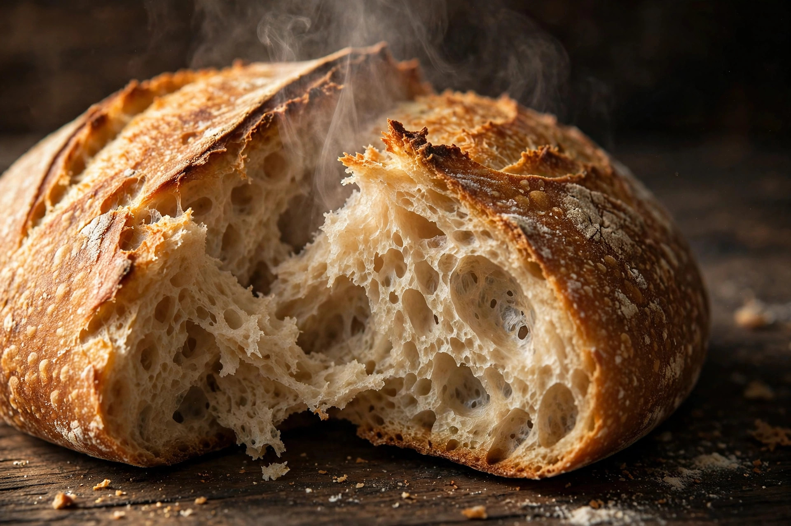
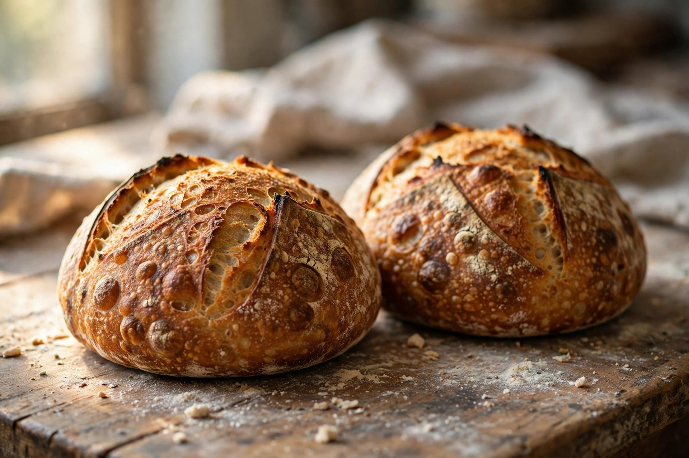
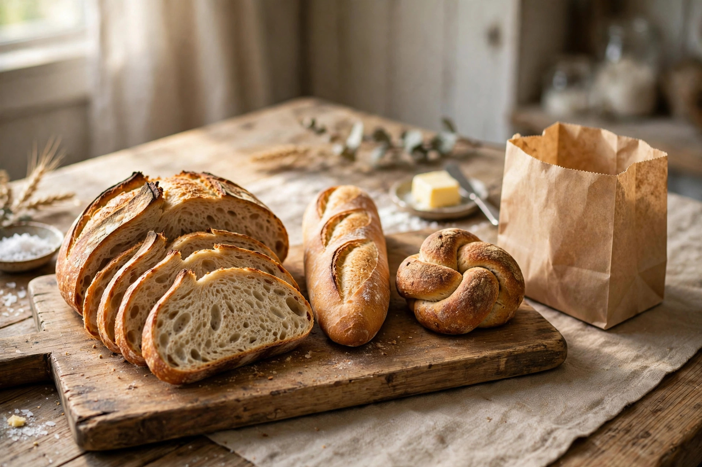

Country Sourdough
The everyday loaf — open crumb, crackling crust, gentle tang.
$9 sampleWed · Fri
Wolfeboro, New Hampshire · Artisan bakery
Small weekly bakes from a Wolfeboro bakery — ordered ahead by form, picked up fresh. Baking for the community since January 2026.

From the oven sample menu
The real menu changes with the week — this is what a bake week could look like. Prices and loaves are illustrative samples.

The everyday loaf — open crumb, crackling crust, gentle tang.

Brioche swirls, brown-butter glaze. Four to a box.
The full lineup
See every sample loaf, its price, and which day it bakes.
Ordering, minus the guesswork
Two bakes a week. The board shows what's baking and when orders close.
Fill the order form (or message the Facebook page) before the cutoff.
Same-day pickup window, bread still warm. The exact spot is confirmed when you order.
Slow dough, honest loaves.

Our story
What started as a January bake has become a small weekly ritual — loaves ordered through a Facebook page and a humble form, picked up around town. No storefront yet. Just bread worth planning your week around.
This week's bakes
Order before the cutoff and pick up fresh in Wolfeboro. Takes about a minute.